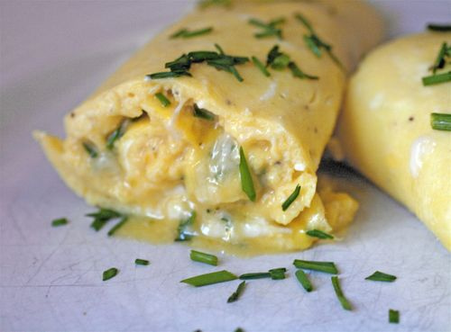

If breakfast is the most important meal of the day and the egg is a cornerstone of the culinary world, then the omelete must be the holy grail of all cooking. Why not master it?
Below I will provide you with a list of detailed instructions, but before we start I have to warn you. This is some next level stuff.
This omelette is amateur stuff. No finesse.

This is the kind of omelette Gordon Ramsay eats when he wakes up.
Let's make on omelette
Using room-temperature eggs, crack the 3 large eggs into a mixing bowl and whisk with a fork (this keeps air out of your eggs). Then add a pinch of kosher or large grain salt.
Heat a pan to high heat for a few minutes to expand the metal, you want the eggs to cook as short as possible so they are silky and tender. Then add a teaspoon of room-temperature unsalted butter. Use a basting brush to ensure even coating.
Add the eggs and intensely stir with a soft silicone spatula by moving the pan and holding the spatula still. Do this for about 5 seconds.
When you see the eggs cook (forming what are called curds) tilt the pan around to cook excess liquid. Use the spatula to form and loosen the edges of the omelette.
Leave the omelette undisturbed for about 10 seconds. Seriously, walk away if you need to.
Ensure the omelette is cooked by jiggling the pan, when cooked fold 1/3 toward you and then hold the pan with an underhand. This is to allow you the best ergonomic motion for slding the omelette onto the plate.
Now that the omelette has landed on your breakfast plate, fold that last 1/3 and cover it in your ingredients. That's right. You don't add your ingredients until it is done cooking (adding ingredients to your omelette while it cooks makes for an uneven egg that usually requires more time on the skillet, resulting in the dry and rubbery omelette you used to make).